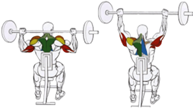

Это также базовый тренинг для развития плечевого пояса. Выполняется в положении сидя.
Исходное положение:
Сесть на спортивную скамью.
Спину слегка прогнуть.
Хват достаточно широкий.
Техника выполнения:
На выдохе выжать снаряд вверх. Руки должны полностью выпрямиться.
На вдохе опустить штангу за голову.
Рекомендации:
Следует выполнять жим без рывков. Медленно и плавно.
Как вариант, можно выполнять упражнение, опуская штангу попеременно – к груди и за голову.